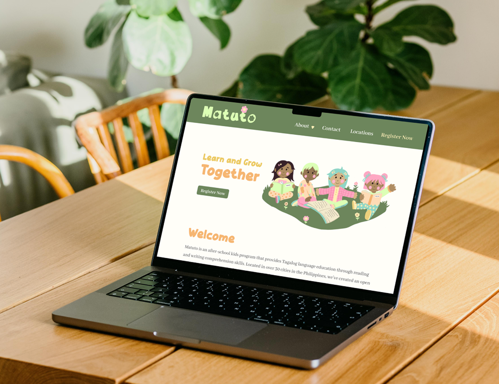
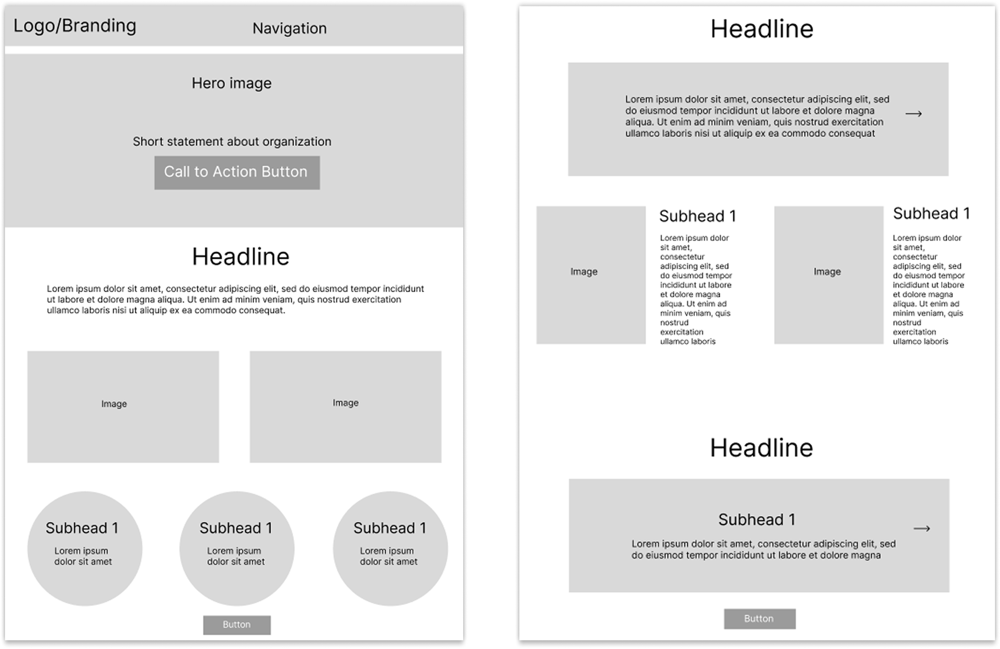
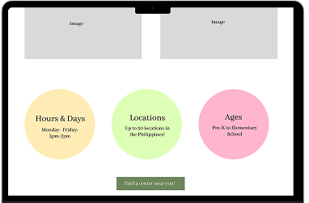
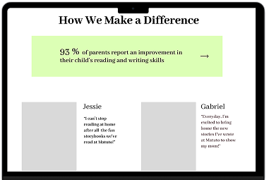
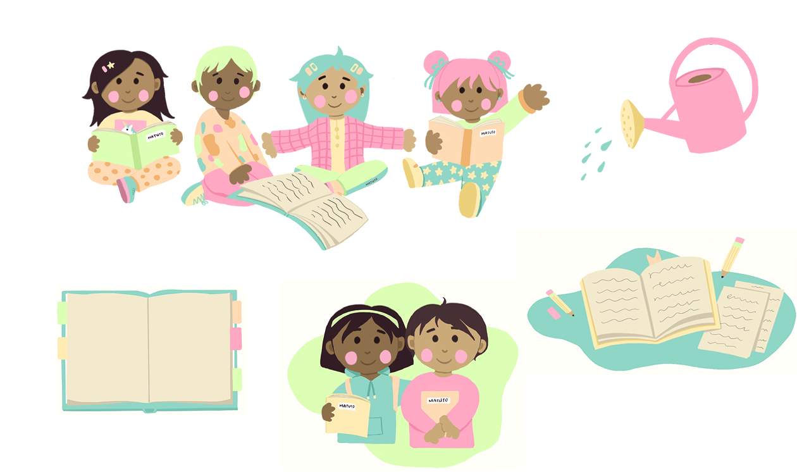
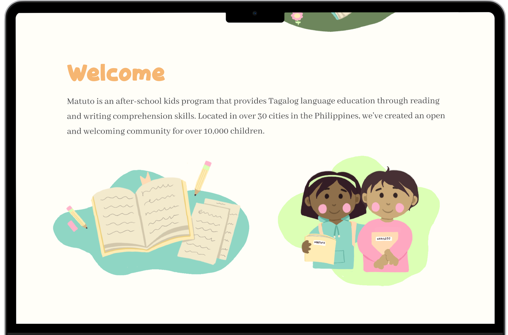
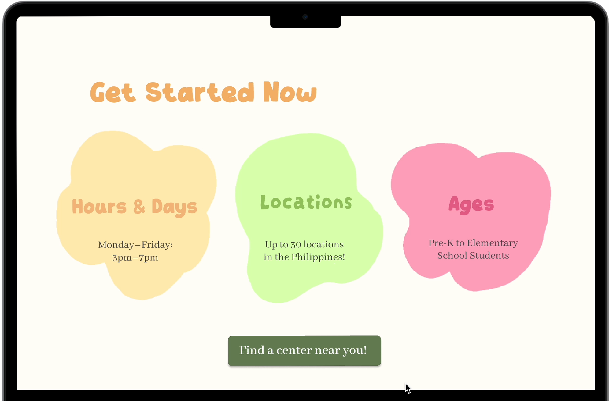
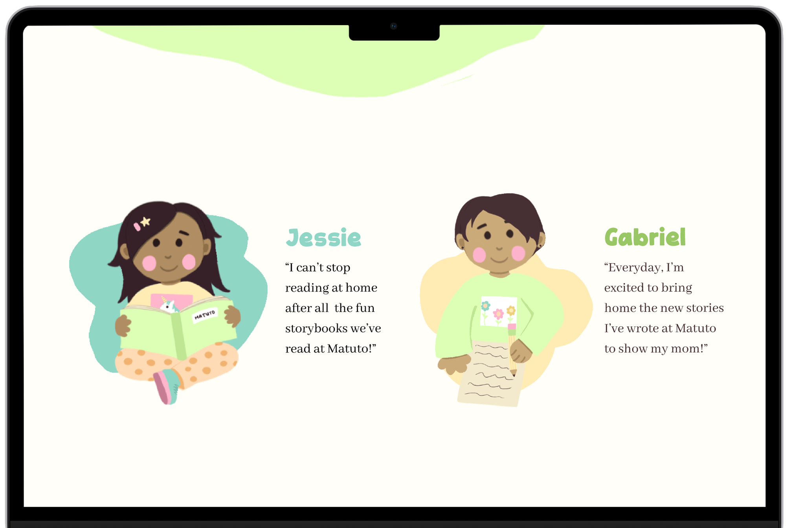

Case Study
Website Design

Overview
I created a website for a hypothetical after-school program to tackle the lack of Tagalog language education for children in the Philippines: Matuto ('Growth' in Tagalog). With the program aiming to improve language skills as well as foster a welcoming community, I designed the website to exhibit a trustworthy institution for parents, yet feel like a warm atmosphere for their children.
Problem
Matuto lacked a digital presence to reach new families, share their mission, and streamline enrollment across their 30+ Philippine locations.
Solution
A warm, child-friendly website that communicates Matuto's impact clearly, builds trust through storytelling, and makes registration feel easy and inviting.
Low-Fidelity
I created a foundational layout, focusing on clear communication and simple navigation.

Mid-Fidelity
I established key content that would best build trust while maintaining a low cognitive load. For my color palette, a dark green grounds the page in professionalism and growth, while spring colors add a child-friendly tone.
Warm, informative introduction

Key information laid out clearly

Statistics and personal stories to show impact
Encourage community and repeat visits
Hi-Fidelity
Aiming for Matuto to stand out for its warm, welcoming atmosphere, I centered my design around my hand-drawn graphics to add a personal and child-like wonder to the site. Using bright colors, rounded shapes, bubbly typography and playful interactive elements reinforced the warm, friendly atmosphere.
Overview
Bubbly typography

Hand-drawn graphics



Moving Forward
I plan to expand Matuto into a complete user journey by developing a full flow prototype and conducting user testing. True to its name, Matuto continues to represent growth, both for the families it envisions and for me as a designer.